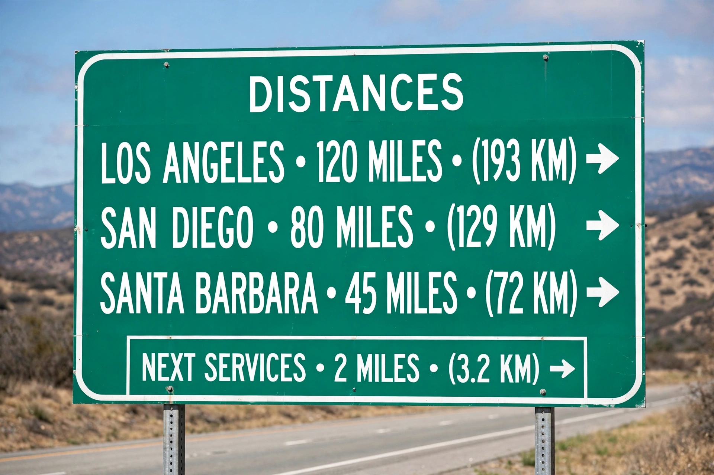

| Metrication in the United States | |
|---|---|
| Status | Partial; customary units predominant in daily life |
| Key laws | Metric Act of 1866; Metric Conversion Act of 1975; Omnibus Trade and Competitiveness Act of 1988 |
| Official system | SI preferred for federal use; US customary units legally defined in metric terms |

Metrication in the United States is the process — incomplete and ongoing — of introducing the metric system (SI) to replace US customary units. Although the United States signed the Treaty of the Metre in 1875 and legalised metric units in 1866, customary units such as miles, pounds and Fahrenheit remain dominant in everyday life, while metric units prevail in science, medicine, the military and much of industry.
The 1975 Metric Conversion Act declared metric the preferred system but made conversion voluntary and created a Metric Board that was abolished in 1982. The 1988 Omnibus Trade and Competitiveness Act required federal agencies to use metric where feasible. Since 1893 US customary units have been legally defined in terms of metric standards, and since the 2019 SI redefinition they ultimately rest on fundamental constants.
Metric units are standard in American science, healthcare (milligrams, millilitres), nutrition labelling, athletics and automotive engineering, and soda is famously sold in 2-litre bottles. Resistance in construction, road signage (miles), weather reporting (Fahrenheit) and general retail has kept the US, alongside Liberia and Myanmar, among the few countries not predominantly metric, though Myanmar has announced metrication plans. Units debates periodically recur, with conversion errors such as the loss of NASA's Mars Climate Orbiter in 1999 cited by advocates.